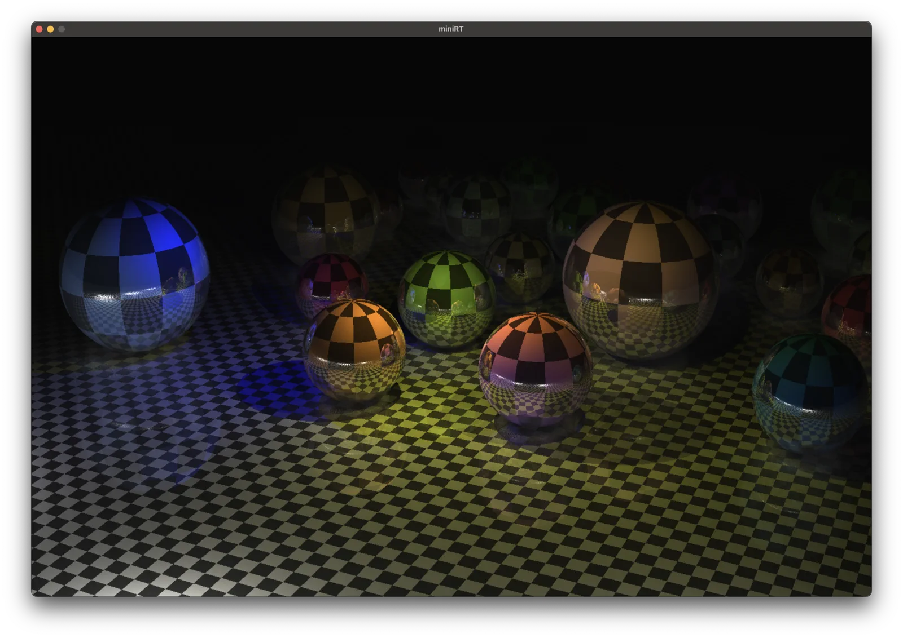

CPU ray tracing
miniRT
광선과 물체의 교차를 계산해 장면을 그리는 C 렌더러

카메라 시야각 비교
구현
광선에서 픽셀까지
카메라에서 생성한 광선과 구·평면·원기둥의 교차를 계산합니다. 교차점에서 광원까지 다른 물체가 가리는지 확인해 그림자를 표현하고, 반사 방향으로 광선을 다시 추적해 픽셀의 색을 구합니다.
교차 검사 범위 줄이기
광선마다 장면 전체의 물체를 검사하지 않도록 k-d tree로 공간을 나눴습니다. 먼저 각 영역을 감싸는 경계 상자(AABB)와 광선의 교차를 검사하고, 통과한 영역 안에서 물체와의 교차를 계산합니다.